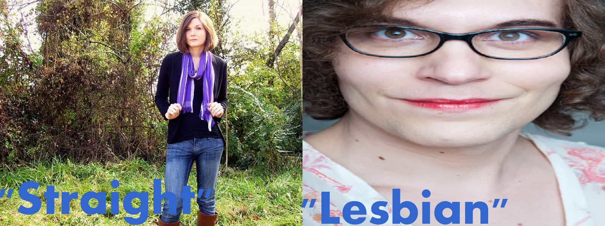

< < < Back
5 Ways To Stop Omega Males From Becoming Transsexuals – Return Of Kings
There is a narcissistic delusional tidal wave sweeping the internet. Many confused men have decided to band together and start advocacy groups about “transforming” into “women.” Omega males, seeing the success stories of the closeted homosexuals who crossdress, are starting to lie about having a “dysphoria” or a feeling of never belonging as a male. It also doesn’t help that most transsexuals were sexually abused before turning to the dark side of humanity. Combine that with most of them being raised by overbearing mothers and you have them completely failing in the sexual market place.
They see the girl that rejects them and notices that she has a much higher sexual pecking order. In a freakish nature vs nurture way, if these omega males can’t get paired up, they can just “convert” themselves to be women and have a much easier time with the sexual privileges modern women have. A girl pretty much has to open her legs to get some. Even an alpha male has to spit some game. As a former LGBT activist turned redpill renegade, I’ve developed five tactical responses to convert transsexuals back in to the men they’re supposed to be .
Don’t respect their pronouns
Imagine for a bit a man who claims to be a Pokemon. Now imagine there was a group of people who claimed to be Pokemons. They want special laws for their specie “pokemon” while making it a hate crime to deny them this “right” of acknowledgment. Now, replace Pokemon with omega males claiming they’re women. Never respect their pronouns. Call them what sex they were born with since sex can’t be changed. Be consistent and these transsexual “women” will realize that they can’t ever expect society to coddle their delusions.
Counterfeiting
Transsexuals who are all mentally ill have built a tolerance for being called freaks. It also doesn’t help that society compromises with ugly men in wigs by calling them “trans” women. The word “trans” means transitioning to be a woman. It’s scientifically impossible for a man to turn in to a woman. These individuals are trying to deceive themselves and society.
A term we have made in Philadelphia is to call these men bootleg. They want to be seen as women when they’re not. It’s very similar to buying a SONY product and in the box is a Nintendo product. Transsexuals knowing this can’t handle being told they’re a falsely advertised bootleg product that society forces us to treat them as if they were an authentic product. Nothing a phony hates more than a person calling them out for it. Next time somebody calls themselves a “trans-woman,” call them a bootleg woman. Don’t dignify mental delusions.
It’s a high-mortality lifestyle
As a society we tend to listen to authority. Transsexual activists have pressured the medical system to “authenticate” transgenderism. They have forced the medical profession to say the only cure for omega males who don’t like themselves is to take a cocktail of hormones and dress up as a woman. Yet, being transgender leads you to be part of a “community” that has a 60% suicide rate . It also leads an individual to have a HIV rate higher than the worst countries of sub-Sahara Africa (27% of all trannies have HIV). Deluding yourself that you were really born a woman is dangerous. Even when the transsexuals get the surgery, it doesn’t cure the delusion.
The surgery is no panacea
Bootlegs love to think that when they finally get the surgery. It will cure all of their dysphoria. The penis is the reason why they can’t live like Sex in the City. According to this, men who have the surgery tend to still commit suicide at a much higher rate. It’s such a common phenomena that a former bootleg made a website about it sexchangeregret.com. Omega males need to be told about the adverse effect of being lied to by the medical establishment.
Snowflakes are typical
Every omega male has some saccharine story about the “revelation” of awakening an inner women-hood. Most of these individuals have failed in life and the heels and makeup are a new “chance “ at life. They decide to hang around other delusional men and progress further down the gender delusion. The skinny effeminate omega males usually focus on sleeping with men. The chunkier more autistic individuals tend to view themselves as “lesbians” who try to push their way in to women’s only institutions. They all say the same terms, have the same goals, and are masters of groupthink. They all have some sort of tranny tribalism over the cisgender aka normal people. They rather trust a fellow deluded tranny than a normal good person.

Transsexualism has grown tremendously over the five years I’ve been monitoring it, especially with the conversion of omega males into being a tranny. When these omega males are at the lowest point of their life, they need a site like this, not blogs dedicated to transsexualism. Push back against transsexualism before it infects those who you love and care about.
Read More: 8 Ways To Spot A Transsexual


{kind=link}